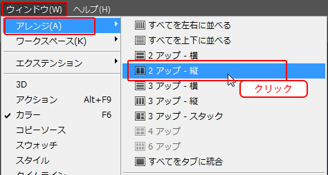
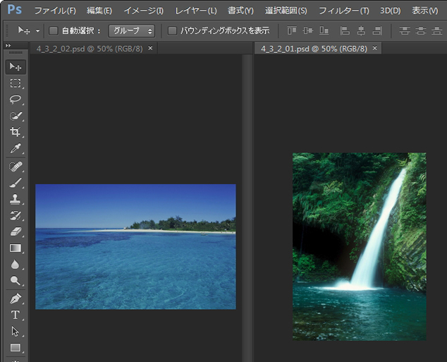
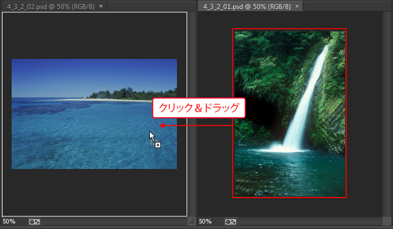
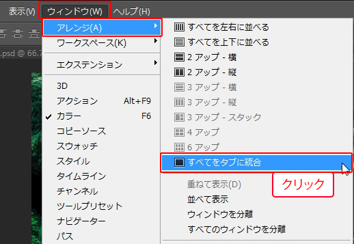
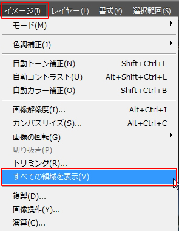

第4章 選択範囲
第3節 カンバスの調整
本項では２枚以上のファイル間の画像移動方法を学習します。
第2項 異なるファイルの画像移動
この項で学習する内容
- 異なるファイル間での画像を移動する方法を習得する。
カンバスサイズは画像によって違う
カンバスサイズは画像によってサイズが違います。
カンバスサイズが異なるファイル同士を合成すると、
基準になるカンバスの大きさ内しか見えなくなってしまいます。
それを実感してもらうため、以下の練習をしてみましょう。
他に開いているファイルがあれば全て閉じてから、
素材フォルダ「PS04」から4_3_2_01.psd、4_3_2_02.psdを開きましょう。
この二つのファイルを合成します。
まず、この二枚のファイルを並べて表示させます。
メニューバーの[ウィンドウ]-[アレンジ]-[2アップ-縦]をクリックします。

二枚の画像が横並びに表示されます。
※メニューバーの[ウィンドウ]-[アレンジ]-[並べて表示]でも同じ操作ができます。

並べて表示されましたら、[ツールパネル]から[移動ツール]を選択しましょう。

選択ができたら、4_3_2_01.psdの画像上でクリックしながら、
4_3_2_02.psdの画像上にドラッグしてください。

ドラッグを離すと、画像が合成されました。
このままでも合成ができたことを確認できますが、
見やすいように[ウィンドウ]-[アレンジ]-[すべてをタブに統合]を選択し、
4_3_2_02.psdのタブを選んで確認します。

4_3_2_02.psdのカンバスサイズは変わらず、移動してきた画像の一部分が隠れてしまいます。
移動ツールで画像全体を合成した場合、カンバスサイズは移動後の写真のサイズなります。
移動した4_3_2_01.psdの画像全体が表示できるようにカンバスサイズを修正します。
メニューバーの[イメージ]-[全ての領域を表示]を選択します。

移動したサイズの異なる画像がすべて表示できるようにカンバスサイズが自動調整されました。

この項のまとめ
- 異なるファイル間の画像の移動方法
- ・メニューバーの[ウィンドウ]-[アレンジ]から複数ファイルを並べて表示させ、[移動ツール]を使ってドラッグすることで画像を移動させる。
・大きさの異なる画像を移動しても、移動先のカンバスサイズは修正されない。
・画像の隠れた箇所を表示させたい場合は、メニューバーの[イメージ]-[すべての領域を表示]よりカンバスサイズを修正する必要がある。
以上でこの項の学習は終了です。
ファイルは閉じて次の項へ進んでください。